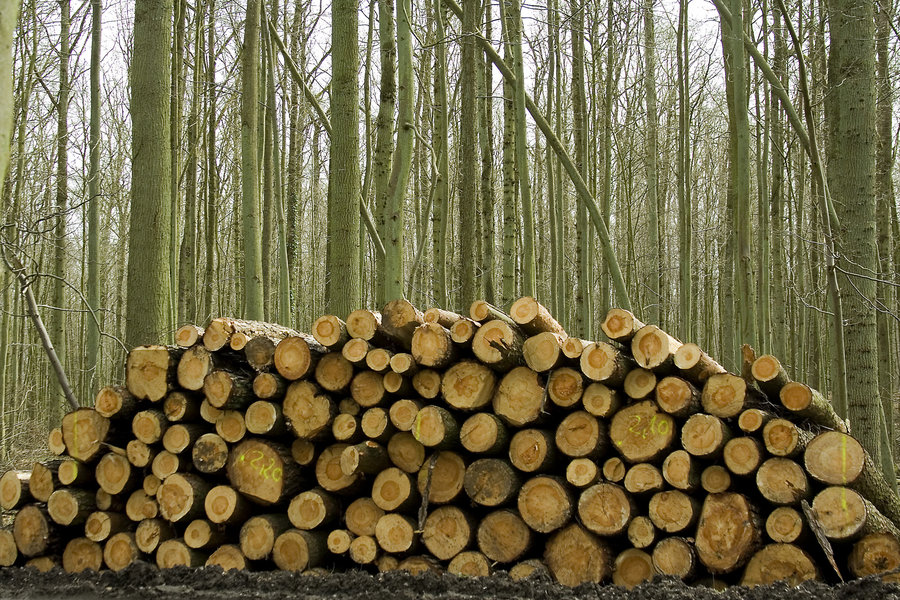
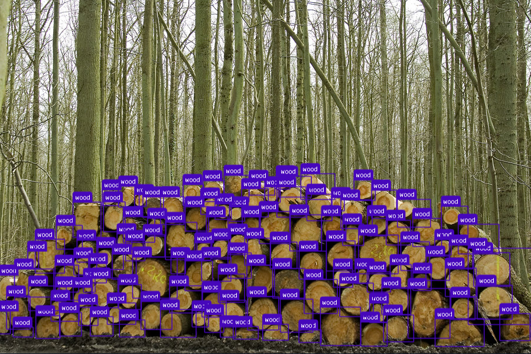

Captura da imagem
Registro da pilha com câmera padrão.
Visão Computacional aplicada ao setor florestal

No cenário atual, o processo depende da avaliação humana em campo, gerando variabilidade e impacto operacional.
Com um clique, o sistema detecta cada tora e entrega o total de forma consistente e escalável.

Da captura ao total final em etapas padronizadas.
Registro da pilha com câmera padrão.
Execução do YOLOv8 sobre a imagem.
Identificação individual com bounding boxes.
Soma instantânea de objetos detectados.
Resultado final para análise operacional.
Ferramentas maduras para precisão, desempenho e evolução contínua.
Orquestração do pipeline e integração operacional.
Modelo de detecção para identificar toras com alta precisão.
Gestão de dataset, anotação e versionamento de treinamento.
Pré-processamento e manipulação de imagens.
Indicadores estimados com base na automação do processo.
Roadmap de implementação para consolidar o sistema em escala industrial.